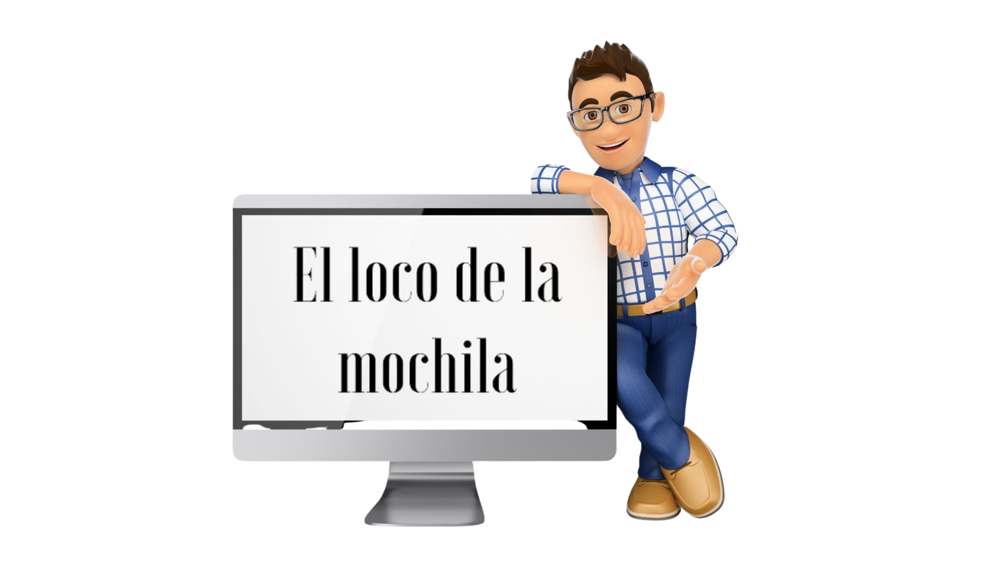

| Título | El cuaderno de Séneca para la evaluación. |
|---|---|
| Descripción | Guía para la planificación del proceso de evaluación y la configuración y uso del cuaderno de Séneca como herramienta digital para la gestión de los datos. |
| Contacto | lopezesparrell@gmail.com |
| Blog | https://blogsaverroes.juntadeandalucia.es/ellocodelamochila/ |
| RRSS | @LopezEsparrell |
| Autoría |
Juan Manuel López Esparrell.  |
| Licencia | Licencia Creative Commons Reconocimiento No comercial Compartir igual 4.0. |
Evaluación con el cuaderno de Séneca.
Créditos
Obra publicada con Licencia Creative Commons Reconocimiento No comercial Compartir igual 4.0